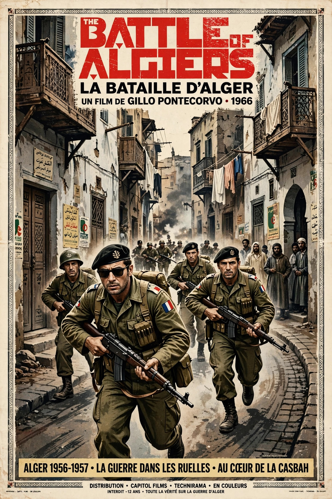

The Battle of Algiers (Italian: La battaglia di Algeri; Arabic: معركة الجزائر) is a 1966 Italian-Algerian war film directed by Gillo Pontecorvo. It reconstructs the urban campaign fought between the Algerian National Liberation Front (FLN) and French paratroopers in Algiers during 1956–57, shot in a black-and-white newsreel style on the actual locations with largely non-professional actors. It is widely regarded as one of the greatest films ever made and a landmark of political cinema.
| The Battle of Algiers | |
|---|---|
 Original poster of The Battle of Algiers showing soldiers in the Casbah Theatrical release poster | |
| Directed by | Gillo Pontecorvo |
| Screenplay by | Franco Solinas, Gillo Pontecorvo |
| Starring | Jean Martin, Saadi Yacef, Brahim Hadjadj |
| Music by | Ennio Morricone, Gillo Pontecorvo |
| Release date | 1966 |
| Running time | 121 minutes |
| Countries | Italy, Algeria |
| Languages | French, Arabic |
The film opens in 1957 with a captured FLN member, tortured by French paratroopers, betraying the hiding place of Ali La Pointe, one of the last FLN leaders in the Casbah. The narrative then flashes back to 1954, following Ali's recruitment in prison and the FLN's campaign of attacks and its internal policing of the Casbah, and the French response under the fictional Colonel Mathieu — a composite figure closely modelled on General Jacques Massu and his officers. It depicts bombings by both sides, the general strike of January 1957, and interrogation under torture, before returning to Ali's death and closing with the spontaneous mass demonstrations of December 1960 and Algerian independence in 1962.
The screenplay by Franco Solinas drew heavily on the memoir of FLN commander Saadi Yacef, who produced the film through his company Casbah Film and played a character based on himself. A disclaimer in the credits states that not one foot of documentary or newsreel footage was used — the grainy realism was entirely staged by cinematographer Marcello Gatti. Jean Martin, who played Mathieu, was the only professional actor in the principal cast.
The film won the Golden Lion at the 1966 Venice Film Festival and was nominated for Academy Awards including Best Foreign Language Film and, later, Best Director and Best Original Screenplay. It was effectively banned in France until 1971. Both insurgent movements and states studied it: the Black Panthers and the Provisional IRA reportedly screened it, while in August 2003 the Pentagon's Directorate for Special Operations held a screening for officers facing the insurgency in Iraq, its flyer noting how the French won the battle but lost the war. The film regularly appears in critics' polls of the greatest films, including the Sight and Sound surveys, and its score by Ennio Morricone is frequently cited among the finest in cinema.
Categories: 1966 films · Italian war films · Algerian War films · Golden Lion winners